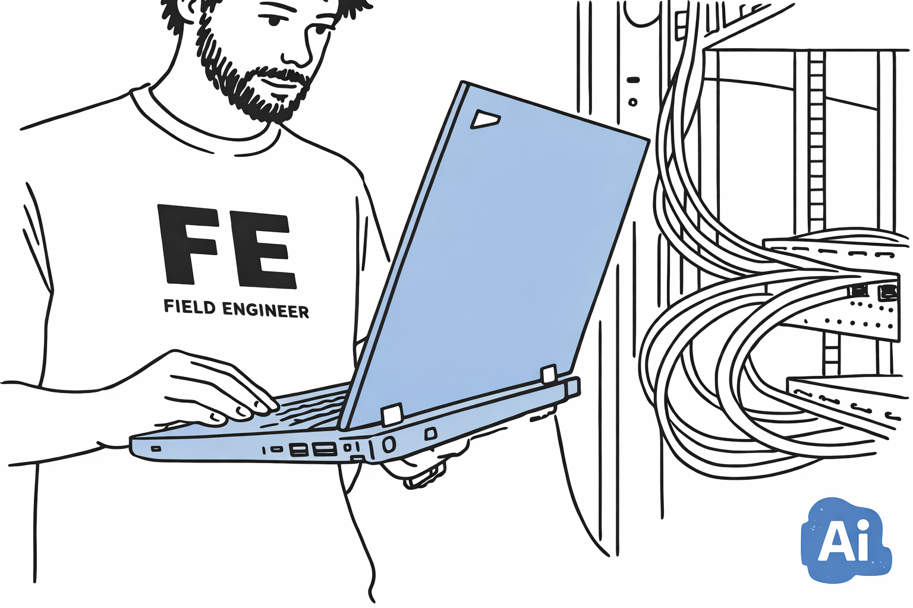

Over mezelf
Ik ben klantvriendelijk, hulpvaardig, leergierig, gemotiveerd, stipt, verzorgt, respectvol, beleefd, verantwoordelijk, plichtbewust, vriendelijk, milieubewust en heb oog voor detail. Ik wil dan ook carrière maken in de ICT waarin klanten helpen centraal staat.